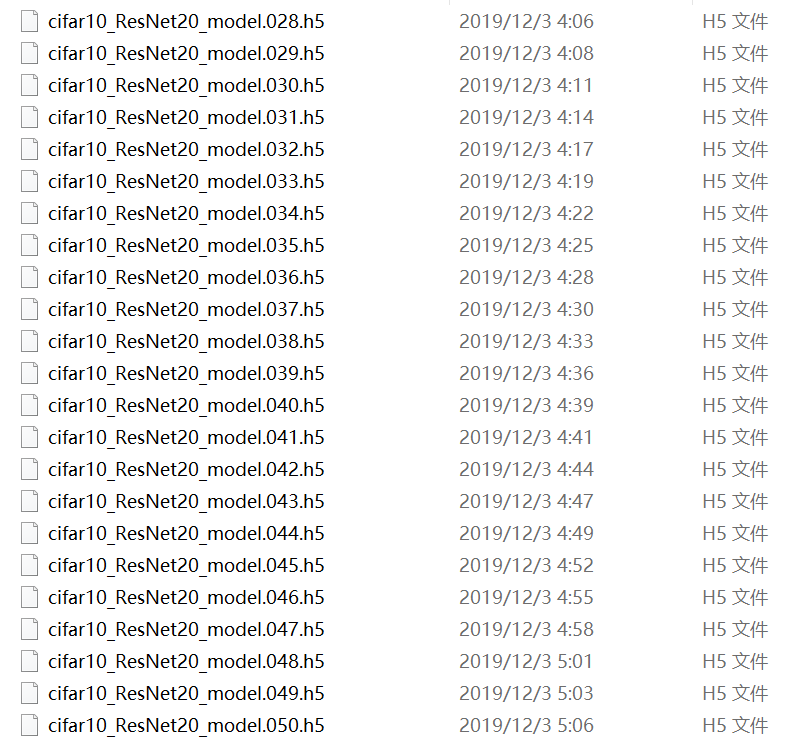
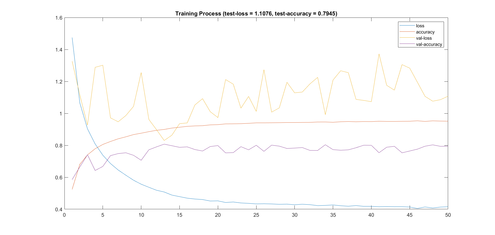

Train a ResNet20-v1 on CIFAR10
Introduction
I try to implement a deep neural network on my laptop. Due to the weak computing capability (NVIDIA GTX 1060 3GB), I decided to train a relatively small network from scratch on a relatively small dataset. Therefore, I choosed ResNet20-v1 and CIFAR10 dataset.
My codes are available here, and the model weights are available here.
ResNet is a famous convolutional neural network structure. It adopts identity/weighted shortcuts to facilitate the convergence of the model, which enables training super-deep neural networks (up to 1001 layers, much higher than the former models which only have no more than 20 layers). It's most characteristics structure is the residual block, where the arc arrow represents a shortcut connection:

The CIFAR-10 dataset consists of 60000 32x32 colour images in 10 classes, with 6000 images per class. There are 50000 training images and 10000 test images.
I implement the model with Keras using Tensorflow 2 based on Python 3.7 (Anaconda 3) on Windows 10 (64bit). As a beginner, I referred to the example code provided by Keras. I understood and rewrite the code, but the structure and hyper-parameters are identical. I got hands-on experience with deep learning during this process, and became familiar with Keras model implementation and training.
Environment
It is probably the most tiresome part:
Download and install Anaconda 3 (using default settings).
Anaconda helps maintain Python packages and enables switching between different python version (e.g. python 2.7 and python 3.6) through virtual environments. In my case, I use python 3.7 as the default python, and create another environment for deep learning with
numpy,scipy,tensorflow,kerasand so on. Besides, I also installed Anaconda 2 (32bit) with python 2.7 (32bit) for other purpose. And there is no conflict among these different python environments up to now.Add Anaconda directories to the system path:
C:\Users\YOURNAME\Anaconda3C:\Users\YOURNAME\Anaconda3\ScriptsC:\Users\YOURNAME\Anaconda3\Library\bin
Create a virtual environment for deep learning (optional):
Enter the command in cmd or Anaconda prompt (replace YOURENVNAME with the name your want, e.g.
tensorflow2py37):xxxxxxxxxx21conda create -n YOURENVNAME2conda activate YOURENVNAMEInstall tensorflow and relevant packages:
(If you're in China, probably you need to change the channel first in order to improve the download speed:
conda config --add channels https://mirrors.tuna.tsinghua.edu.cn/anaconda/pkgs/main/win-64/)Enter the command:
xxxxxxxxxx11conda install tensorflow-gpuAnd Anaconda will prepare everything for you.
Install other required packages:
View Keras installation guidance to see if all dependencies are installed, if not, use
conda install xxto install them.Install Keras:
pip install keras. You can deactivate the virtual environment now byconda deactivate.Update the GPU driver with NVIDIA Geforce Experince.
Begin coding:
I launch Visual Studio Code for programming in the Anaconda Navigator GUI, after choosing the python version (CAUTION: DON'T OPEN VSCODE DIRECTLY OUTSIDE ANACONDA, otherwise the virtual environment won't work).
Coding
I rewrote the ResNet layer function to make it more concise:
x1def resLayer(_input, _filters = NBASEFILTERS, _kernelSize = 3, _stride = 1,2 _norm = True, _acti = True):3 """A ResNet layer: Conv + BN + ReLu45 The last (3rd) layer in each block has no ReLu.6 Projection shortcut has no BN and no ReLu.7 """8 x = _input9 x = Conv2D(_filters, kernel_size=_kernelSize, strides=_stride, padding='same',10 kernel_initializer='he_normal', kernel_regularizer=l2(L2WEIGHT))(x);11 if _norm:12 x = BatchNormalization()(x);13 if _acti:14 x = Activation('relu')(x);15 return xAnd I extracted the residual block as a function for clearer model design:
xxxxxxxxxx241def resBlock(_input, _stage, _block):2 """resBlock - a residual block containing 2 conv and 1 shortcut34 """5 nFilters = NBASEFILTERS * (2 ** _stage)6 if _stage > 0 and _block == 0: # downsample7 strides = 28 else:9 strides = 11011 # 2 conv12 output = resLayer(_input, nFilters, _stride=strides)13 output = resLayer(output, nFilters, _acti=False)1415 # shortcut16 if _stage > 0 and _block == 0: # projection17 # Caution: here the Keras document implementation differs from 18 # the one mentioned before (in kernel size), and we use Keras's.19 _input = resLayer(_input, nFilters, _kernelSize=1,20 _stride=strides, _norm=False, _acti=False)2122 output = keras.layers.add([_input, output])23 output = Activation('relu')(output)24 return outputThe model generator:
xxxxxxxxxx211def ResNet20(inputShape):2 """ResNet20 - the network34 Returns a Keras model.5 """6 inputs = Input(shape=inputShape)7 x = resLayer(inputs) # resLayer189 # resBlocks10 for nStage in range(3):11 for nBlock in range(3):12 x = resBlock(x, nStage, nBlock)1314 x = AveragePooling2D(pool_size=8)(x)15 y = Flatten()(x)16 outputs = Dense(10, activation='softmax',17 kernel_initializer='he_normal')(y)1819 # Generate model20 model = Model(inputs=inputs, outputs=outputs)21 return modelThe training configuration was roughly the same as the Keras example, but I didn't use data augmentation.
Result
I trained for 50 epochs:

The training loss was steadily decreasing, but it seems that the accuracy continued to fluctuate. The final loss and accuracy are roughly the same on tesing and training set. Even though it seems that the model was still under-fitting, it performed well (80% accuracy, much higher than chance level 10%) on the testing set (since I was not so familiar with Keras visualization, I use Matlab to plot).

A little problem is that the training process seems to be too slow (170 sec/epoch, while the benchmark on GTX 1080Ti (just 140% more powerful than my GPU, according to the UserBenchmark) is 35 sec/epoch). Acoording to the terminal output, the GPU was correctly activated (2019-12-03 02:48:20.844426: I tensorflow/core/common_runtime/gpu/gpu_device.cc:1304] Created TensorFlow device (/job:localhost/replica:0/task:0/device:GPU:0 with 2103 MB memory) -> physical GPU (device: 0, name: GeForce GTX 1060, pci bus id: 0000:01:00.0, compute capability: 6.1)), but the GPU load is only around 20% during the training. Probably there are some other configurations to set in order to make full use of the GPU.